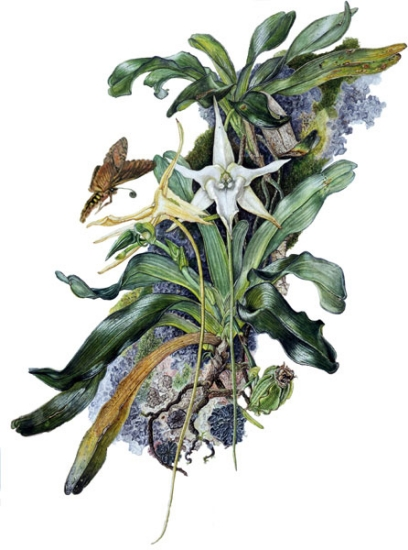
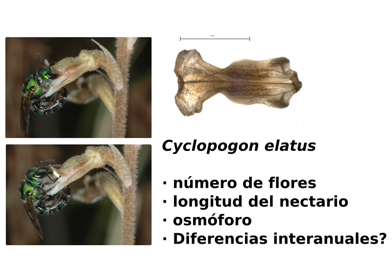
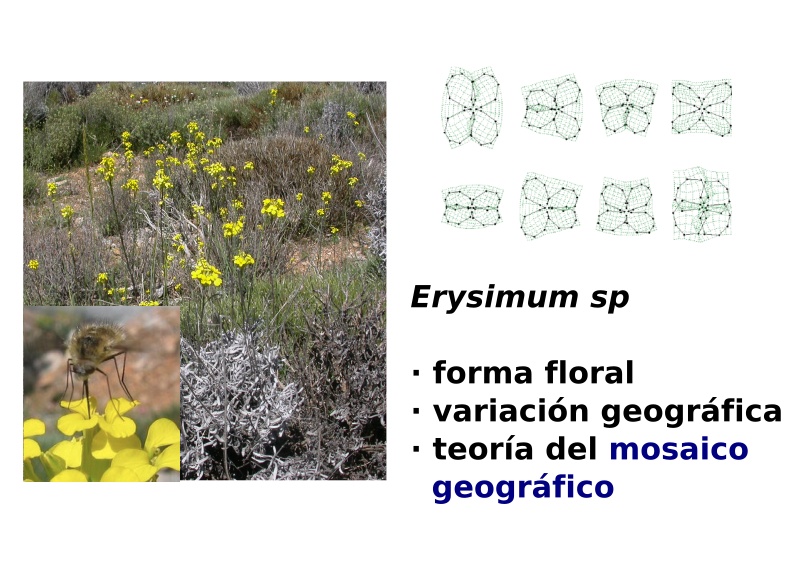
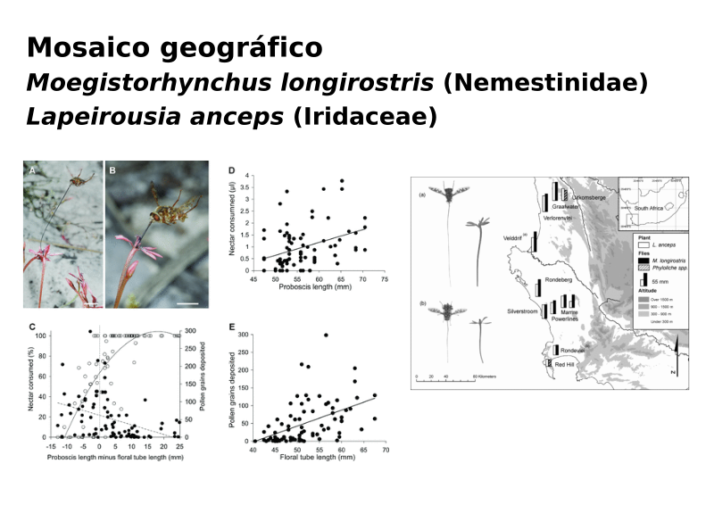
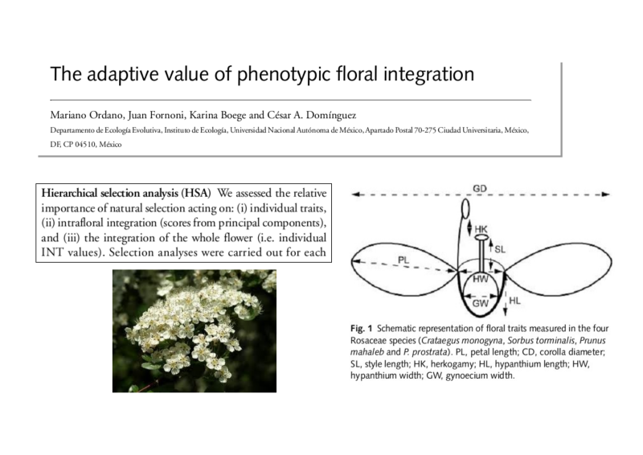
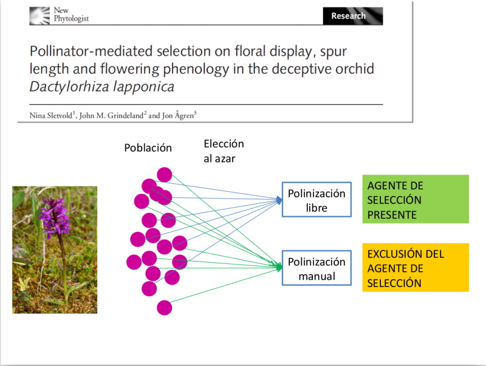
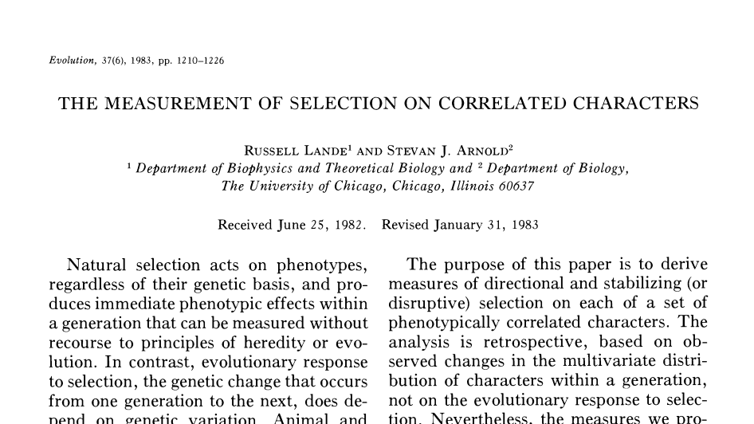
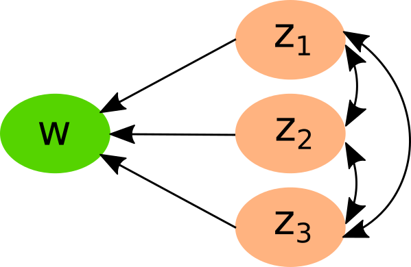

¿Puede considerarse improbable, dado que indudablemente se han producido variaciones útiles para el hombre, que otras variaciones útiles … deberían a veces ocurrir en el curso de miles de generaciones? Si esto ocurre, ¿podemos dudar (recordando que nacen muchos más individuos de los que posiblemente pueden sobrevivir) que los individuos que tienen alguna ventaja, por pequeña que sea, … tendrían la mejor oportunidad de sobrevivir y de procrear su especie? Por otro lado, podemos estar seguros de que cualquier variación en el menor grado de daño sería destruida rígidamente. Esta preservación de variaciones favorables y el rechazo de variaciones perjudiciales, lo llamo Selección Natural.

Darwin 1872
Maad, Evolution 2000; Maad & Alexandersson J. Evol. Biol. 2004
 Benitez-Vieyra et al., Func. Ecol. 2006; Benitez-Vieyra et al., Evol. Ecol. 2012

Gómez et al., Am. Nat. 2006; Proc. R. Soc. B 2008, Ecol. Monog. 2009

Pauw et al. Evolution 2009

Ordano et al. New Phyto 2008

Sletvold et al. New Phyto 2010; Ecology 2011; 2012; Evolution 2016
\[\Delta z = h^2 s\]
\[\Delta \overline{z} = G P^{-1} s\]
\[\Delta \overline{z} = G \beta\]
No sólo cambian las medias de cada uno de los rasgos…
 Lande & Arnold Evolution 1983
La selección puede estimarse a través de un modelo de regresión múltiple.

\[w = \alpha + \beta_1z_1 + \beta_2z_2 + \gamma_{11}z_1^2 + \gamma_{22}z_2^2 + \gamma_{12}z_1z_2 + \epsilon\]
Las combinaciones aumentan raṕidamente con el número de rasgos!
\[w = \alpha + \sum_{i=1}^{n}\beta_iz_i + 1/2 \sum_{i=1}^{n} \gamma_{ii}z_i^2 + \sum_{i=1}^{n}\sum_{j=1}^{n} \gamma_{ij}z_iz_j + \epsilon_i\]
\[w = \alpha + \boldsymbol{\beta^T z} +1/2 \boldsymbol{z^T \gamma z} + \epsilon\]
El modelo de Lande y Arnold es ampliamente aplicable pero…
Existe muchos métodos alternativos para estimar la selección. Sin embargo, casi todos estiman los mismos parámetros de selección lineal, no lineal y correlacional.